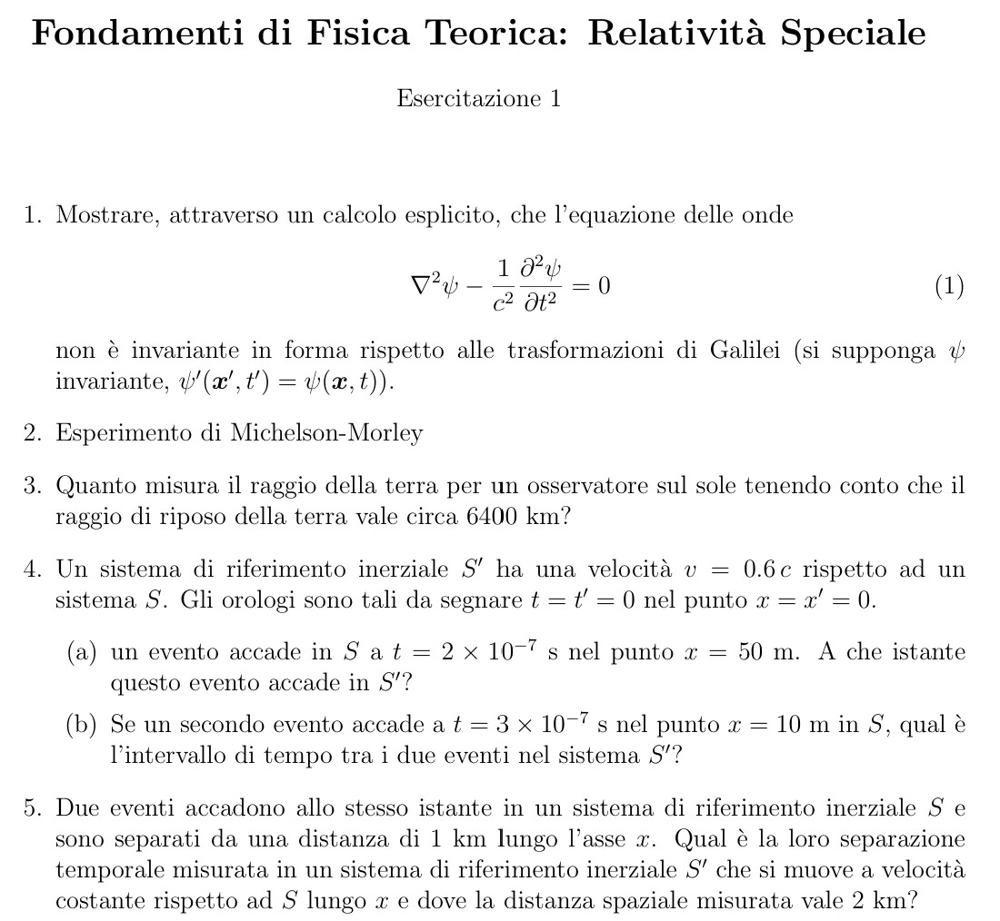
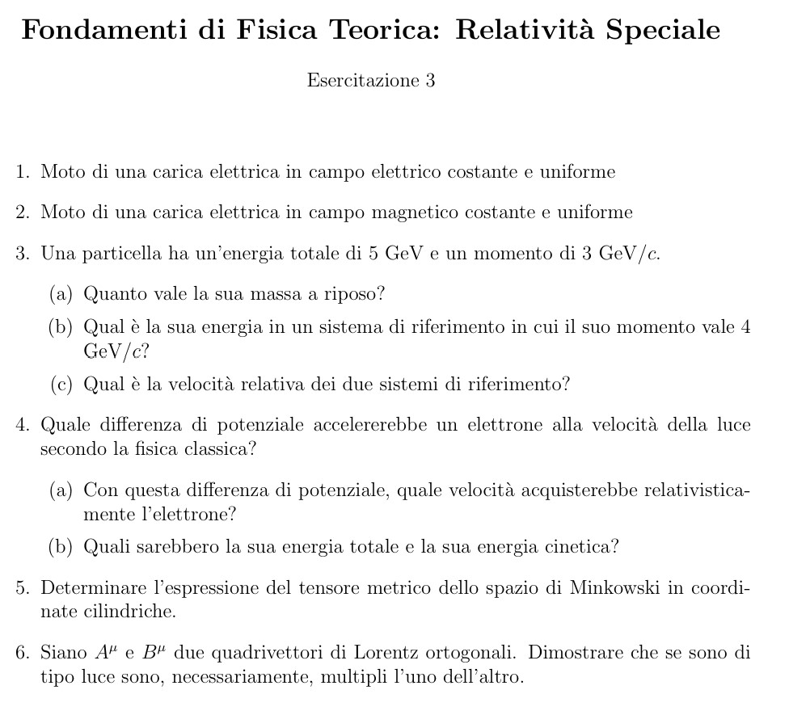

Fondamenti di Fisica Teorica: Relatività Speciale
Esplora e risolvi esercizi di relatività speciale con soluzioni interattive e visualizzazioni dinamiche.
Esercitazione 1
Scarica PDF Esercitazione 1

Esercizio 1
Mostrare, attraverso un calcolo esplicito, che l'equazione delle onde
∇²ψ - (1/c²) ∂²ψ/∂t² = 0
non è invariante in forma rispetto alle trasformazioni di Galilei (si supponga ψ invariante, ψ'(x, t') = ψ(x, t)).
Esercizio 2
Esperimento di Michelson-Morley
Esercizio 3
Quanto misura il raggio della terra per un osservatore sul sole tenendo conto che il raggio di riposo della terra vale circa 6400 km?
Esercizio 4
Un sistema di riferimento inerziale S' ha una velocità v = 0.6 c rispetto ad un sistema S. Gli orologi sono tali da segnare t = t' = 0 nel punto x = x' = 0.
(a) Un evento accade in S a t = 2 × 10⁻⁷ s nel punto x = 50 m. A che istante questo evento accade in S'?
(b) Se un secondo evento accade a t = 3 × 10⁻⁷ s nel punto x = 10 m in S, qual è l'intervallo di tempo tra i due eventi nel sistema S'?
(a) Un evento accade in S a t = 2 × 10⁻⁷ s nel punto x = 50 m. A che istante questo evento accade in S'?
(b) Se un secondo evento accade a t = 3 × 10⁻⁷ s nel punto x = 10 m in S, qual è l'intervallo di tempo tra i due eventi nel sistema S'?
Esercizio 5
Due eventi accadono allo stesso istante in un sistema di riferimento inerziale S e sono separati da una distanza di 1 km lungo l'asse x. Qual è la loro separazione temporale misurata in un sistema di riferimento inerziale S' che si muove a velocità costante rispetto ad S lungo x e dove la distanza spaziale misurata vale 2 km?
Esercitazione 2
Scarica PDF Esercitazione 2
Esercizio 1
Dilatazione della vita media dei muoni cosmici.
Esercizio 2
Un iperone A ha una vita media di circa 2.5 × 10⁻¹⁰ s nel suo sistema di riferimento. Se copre una distanza di 0.05 m prima di decadere, quanto vale la sua velocità?
Esercizio 3
Una particella di velocità 0.8c si muove verso la terra lungo la direzione nord-sud; un'altra particella si muove nelle direzione opposta con velocità 0.6c. Calcolare la velocità relativa di avvicinamento di una particella rispetto all'altra.
Esercizio 4
Si considerino due sistemi di riferimento inerziali S e S' in moto relativo con velocità v < c lungo l'asse x.
(a) Se un corpo si muove con velocità u in S e velocità u' in S' dimostrare che se u < c anche u' < c, mentre se u = c, u' = c.
(b) Se v = 3c/4, uₓ = 3c/4, uᵧ = c/2 e u_z = 0, in quale direzione e con quale velocità si muove il corpo in S'.
(a) Se un corpo si muove con velocità u in S e velocità u' in S' dimostrare che se u < c anche u' < c, mentre se u = c, u' = c.
(b) Se v = 3c/4, uₓ = 3c/4, uᵧ = c/2 e u_z = 0, in quale direzione e con quale velocità si muove il corpo in S'.
Esercizio 5
Con quale velocità e in quale direzione si muove una galassia A se una linea di assorbimento a 550 nm misurata per una galassia stazionaria risulta a 450 nm per la galassia A? E per una galassia B che presenta la stessa linea spostata a 700 nm?
Esercitazione 3
Scarica PDF Esercitazione 3

Esercizio 1
Moto di una carica elettrica in campo elettrico costante e uniforme
Esercizio 2
Moto di una carica elettrica in campo magnetico costante e uniforme
Esercizio 3
Una particella ha un'energia totale di 5 GeV e un momento di 3 GeV/c.
(a) Quanto vale la sua massa a riposo?
(b) Qual è la sua energia in un sistema di riferimento in cui il suo momento vale 4 GeV/c?
(c) Qual è la velocità relativa dei due sistemi di riferimento?
(a) Quanto vale la sua massa a riposo?
(b) Qual è la sua energia in un sistema di riferimento in cui il suo momento vale 4 GeV/c?
(c) Qual è la velocità relativa dei due sistemi di riferimento?
Esercizio 4
Quale differenza di potenziale accelererebbe un elettrone alla velocità della luce secondo la fisica classica?
(a) Con questa differenza di potenziale, quale velocità acquisterebbe relativisticamente l'elettrone?
(b) Quali sarebbero la sua energia totale e la sua energia cinetica?
(a) Con questa differenza di potenziale, quale velocità acquisterebbe relativisticamente l'elettrone?
(b) Quali sarebbero la sua energia totale e la sua energia cinetica?
Esercizio 5
Determinare l'espressione del tensore metrico dello spazio di Minkowski in coordinate cilindriche.
Esercizio 6
Siano Aᵘ e Bᵘ due quadrivettori di Lorentz ortogonali. Dimostrare che se sono di tipo luce sono, necessariamente, multipli l'uno dell'altro.